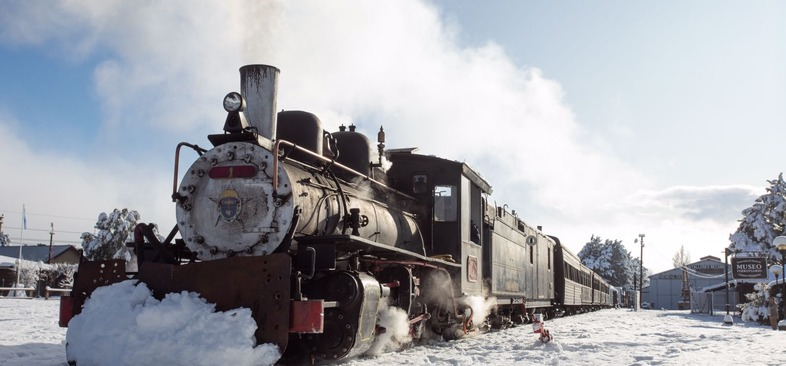
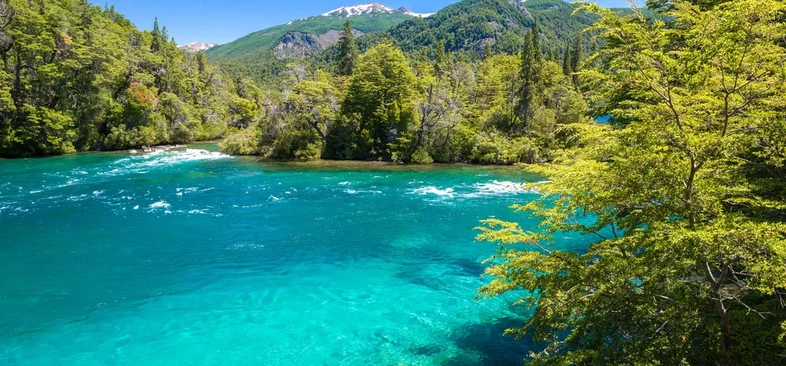
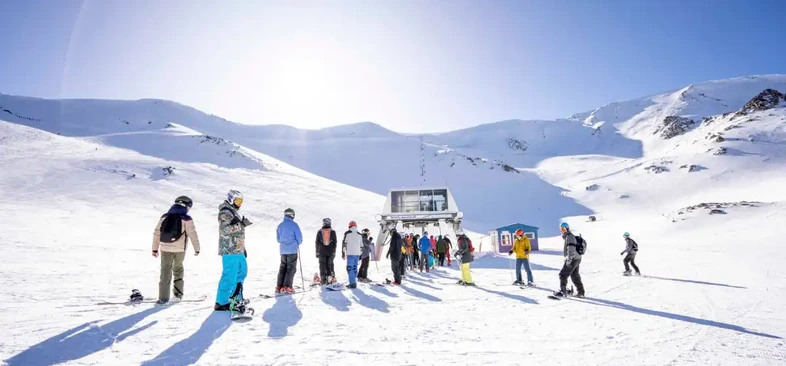
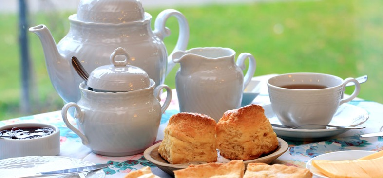
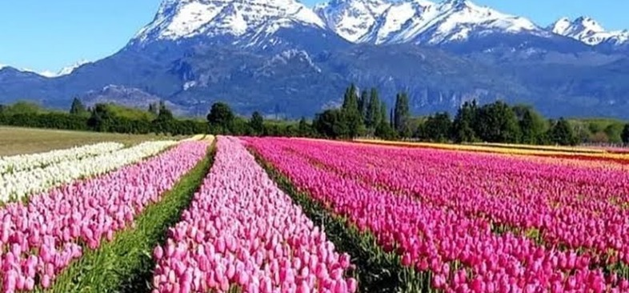
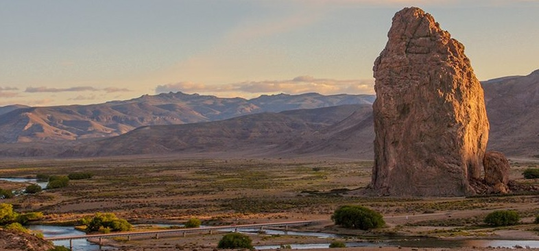
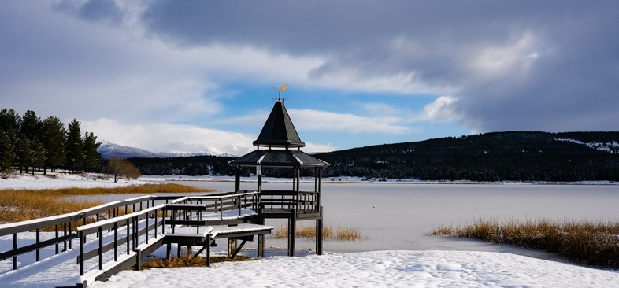
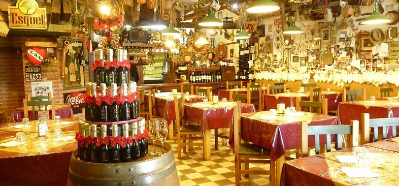

Sur Global, principio de todo.

Esquel es una ciudad tranquila con fuerte identidad galesa, al pie de los Andes y a 70 km del Parque Nacional Los Alerces, Patrimonio de la Humanidad por la UNESCO desde 2017. La Comarca Andina combina naturaleza prístina, tradición y aventura sin las multitudes de otros destinos patagónicos.
Temperaturas frescas pero agradables. La naturaleza explota en flor. El momento exacto para ver el campo de tulipanes en Trevelin.
Ideal para senderismo, pesca y navegación en Los Alerces. Días largos y cálidos, perfectos para trekking al glaciar.
Esquí en el Cerro La Hoya. Esquel se viste de blanco y la Trochita sale humeante entre la nieve: escena única.
Vuelos directos desde Buenos Aires, a veces con escala en Bariloche. El aeropuerto Brigadier Parodi está a 20 minutos del centro.
Desde Bariloche por la Ruta Nacional 40, unas 4 horas de viaje. También desde Trelew y Comodoro Rivadavia.
Locomotoras Baldwin de 1922 y vagones de madera. Recorrido regular Esquel–Nahuelpan (2.5 a 3 horas) con parada en una feria artesanal. Paul Theroux la inmortalizó en "El viejo expreso de la Patagonia". Reservar con anticipación en temporada alta.

A 70 km de Esquel. Bosques milenarios de alerces de hasta 2.600 años. La excursión en lancha al alerce "El Abuelo" (60 m de altura, 2.200 años) es imperdible. Lagos Futalaufquen y Menéndez de un azul extraordinario. Para más aventura: navegación y trekking al Glaciar Torrecillas.

Centro de esquí a 13 km del centro. 30 pistas y 8 medios de elevación. Menos concurrido y más accesible que Bariloche. En verano, las aerosillas suben a caminantes para trekking con vistas al lago Rosario. La base está a 2.100 m s.n.m. — tomarlo con calma el primer día si no estás aclimatado.

A 24 km de Esquel. Descendientes de los colonos del Chubut (llegaron en 1865) mantienen viva la tradición del té. Imperdible la Casa de Té Nain Maggie: tortas, scones y dulces de recetas centenarias.

Florece entre principios de octubre y principios de noviembre, a 13 km de Trevelin. Un mar multicolor con los Andes de fondo. Paseos, confitería con pastelería galesa, feria artesanal y vuelos en globo (clima mediante). Lo apodan la "Keukenhof argentina". Solo abierto en temporada de floración — consultar antes de ir.

Área natural protegida a 125 km de Esquel. Un domo volcánico de más de 200 m en medio de un cañadón. Ideal para trekking y escalada. Un paisaje marciano que pocas guías mencionan.

Reserva natural urbana a 4 km del centro. Senderos y miradores con vista a la ciudad y al Cordón Nahuelpan. Ideal para una escapada rápida o para ver el atardecer sin moverse de la ciudad.

Clásico esquelense, ambientado con antigüedades. Pool, música y buena barra. El lugar donde va la gente del pueblo.
Cervecería artesanal con platos de fondo: ojo de bife, hamburguesas. Buena opción para los días de nieve.
Favorito de los locales. Pastas caseras, precio justo y atención rápida. Pedí el menú del día.
Cocina de campo con sabores intensos. Cazuela de cordero, trucha del río y cortes de parrilla clásicos.
La experiencia galesa auténtica. Dulces caseros, torta negra, scons con mermelada de rosa mosqueta. Una visita obligada antes de volver.